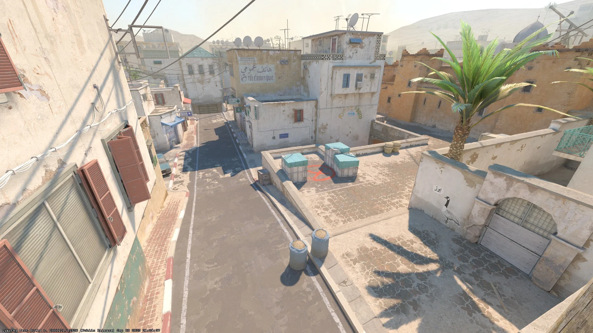
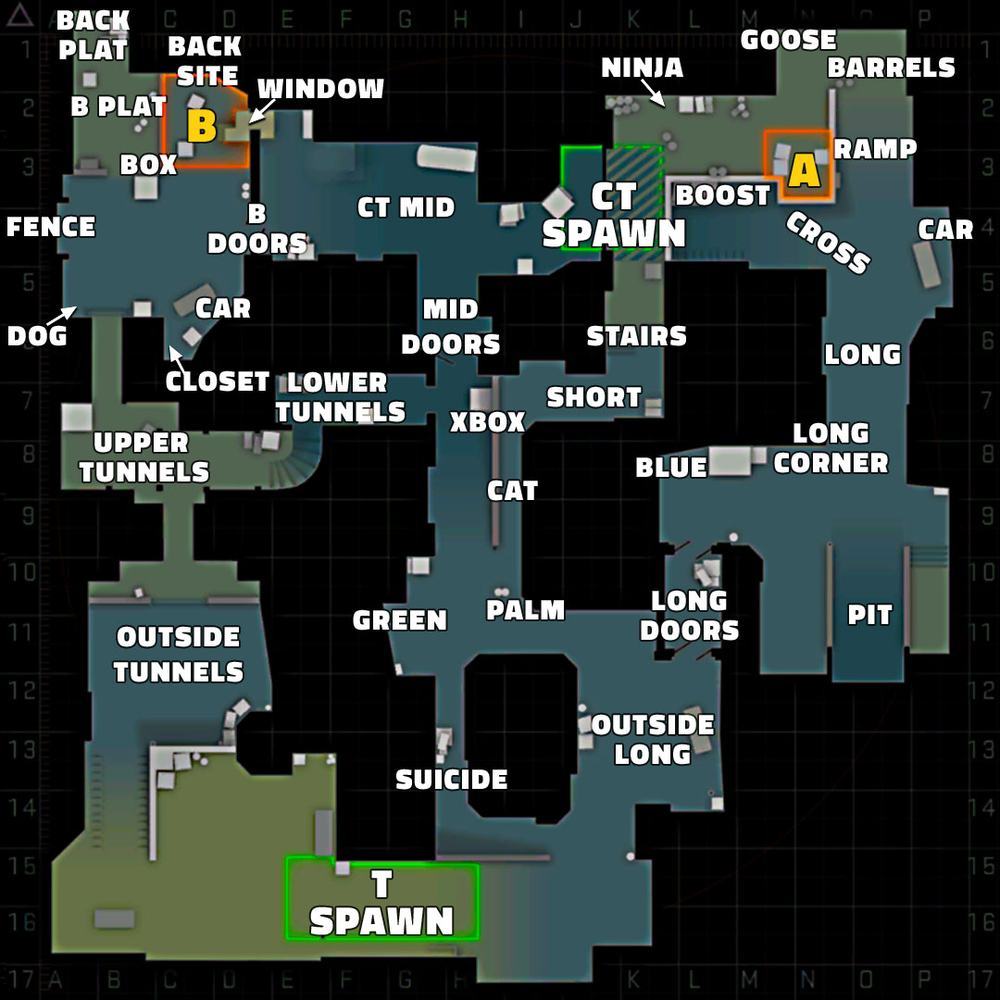
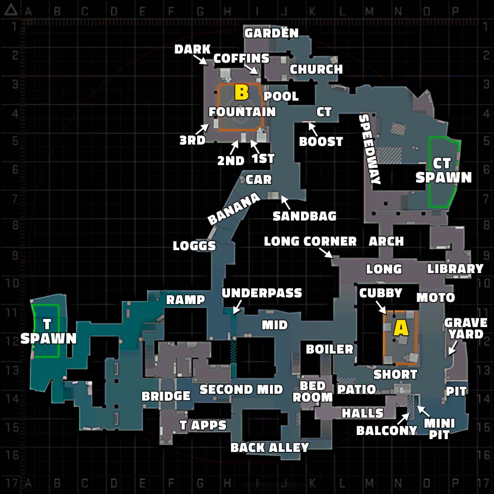

CS2 - Legnépszerűbb pályái
Dust 2:
A Dust 2 az egyik legismertebb és legtöbbet játszott pálya a CS2-ben. Egy klasszikus bombatelepítéses térkép.

A Dust 2 térképe:

Inferno:
Az Inferno egy szűk utcás, középkori olasz faluban játszódó pálya.

Az Inferno térképe:
